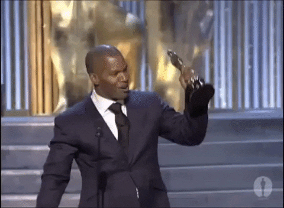

Awards
Growing up, I see my awards as token for gift. My mom always told us that if we are able to secure an award we can buy any toy we want
that is why I struggle and pursue to get an awards in each academic year.
List of Awards
- Top 2 and 3 during elementary
- Consistent with honors during high school
- Won researcher of the year during high school
- Consistent president's lister in college

Due to my merit as an academic achiever, I was also able to secure different scholarships
- Makati Scholarship
- DOST Merit Scholar
- Taguig Scholarship
- MACEMCO Scholarship
Thanks to these scholarships in college, I have a fuel to strive more and achieve higher during my college days.